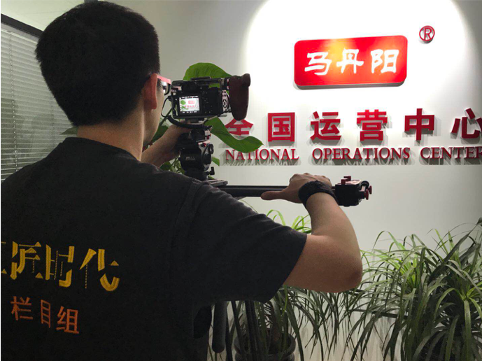

X

2018年6月20号，正值端午时节，南方普遍大雨，这并没有影响《工匠时代》栏目组，记录时代工匠们的步伐。一场与大雨赛跑的寻美之路正式起航，这次我们将全面记录，一个美丽的故事、一份美丽的事业。
为了赶在大雨到来之前进行拍摄，摄制组搭乘早上6:30的航班，从北京飞往广州。上午10点首先来到，江西赣州米伽素美容有限公司，位于广州市的生产工厂，开始拍摄。
在十万级净化实验室和生产车间里，我们深度了解和记录了，米伽素产品卓越的品质，和精益求精的态度。
完成工厂的拍摄工作后，摄制组连夜赶往江西赣州，在这里我们见到此次拍摄的主人公，赖梅芳。一名逐梦人、一名造梦人、一名圆梦人。
不忘初心，方得始终，在赖梅芳身上展现的淋漓尽致。出身于大山深处的赖梅芳，平易近人，热情洋溢。和大多数女人一样，最初只是对美的渴望，对美的执着，一个单纯的梦想，成就了如今的赖梅芳和米伽素品牌。
素颜美，是米伽素的初心，产品全部采用纯天然草本植物，经国际一流技术萃取精华，目的就是为了达到“无妆胜有妆”，在访谈过程里，从赖梅芳的话语中，充满了自信和美丽。如何让这份自信和美丽，分享给更多的人，米伽素经过多年的经验累积和运营管理，终于摸索出一套完整的方案。
拍摄的最后一天，摄制组来到位于江苏省盐城市境内的东台市，在这里摄制组详细记录了，米伽素加盟店的魅力，以及顾客对米伽素品牌的认可。
从最初一个追逐美丽的梦想，到自己成就一番美丽的事业，再到分享这份美丽。赖梅芳和米伽素，跟随着时代脉搏发展，大众创业，万众创新，不是一句口号，需要我们认真、努力的去践行。让世界爱上中国护肤品品牌，米伽素坚定不移的不断前行着。
《工匠时代》栏目组，与时代匠者同行！
2018年5月下旬，老故事频道《工匠时代》栏目组来到河南省会郑州，在这里将探寻一位杰出匠人。
二十载冬去春来，一名兢兢业业的医师，毕生只专研一项技术，将其精益求精，将优秀的技艺打造成为卓越，他就是樊海燕医师。
《工匠时代》栏目组，首先来到马丹阳健康科技有限公司总部，公司办公地点位于郑州高铁站经济圈，郑州是我国中部最重要的交通枢纽站，地理位置便利。在樊海燕的引领下，我们走进了一个全新的健康生活方式，鼻腔护理。
马丹阳健康科技有限公司，是一家专业从事鼻腔护理和鼻腔疾病治疗与防范的专业公司，公司成立于1998年，历经二十年时间考验，服务全国二十多个省份，200多个城市及地区，覆盖全国受众累计达2亿人次。
在为期3天的跟踪拍摄中，栏目组感受到一名心怀仁爱的医师，是如何与时俱进，将其专业精益求精，为更多的人服务。打造全国最大的专业鼻腔护理连锁机构，从产品工艺到门店服务，一条优秀完整的服务闭环。
为更深度的了解马丹阳，栏目组跟随樊海燕，驱车来到汝州，详细记录拍摄，马丹阳各类产品的研发、生产以及马丹阳第一家门诊店，栏目组务求将这一名平凡医师的非凡经历，用镜头记录下来。
在樊海燕的家乡，栏目组感受到樊海燕那份浓浓的乡情，汝州悠久厚重的历史文化，风景秀丽的自然风光，这一切塑造了樊海燕，秉承传统 心怀仁爱 ，使得他一直保持着医师的淳朴本真。
作为行业内领军企业，马丹阳健康科技有限公司，传承道医正统，将古方秘方与现代科技相融合，为广大客户带来一个全新卫生理念“鼻腔护理”，如同三十年前的口腔护理-刷牙，鼻腔护理现在正被越来越多的人重视。
科技在发展，时代在变迁，唯一没有改变的，是马丹阳对鼻腔护理事业的初心初衷。
《工匠时代》栏目组，与时代工匠同行！
2018年5月15日，《工匠时代》栏目组，走进营口路腾交通设施有限公司，进行为期3天，全面、深入的实地采访与拍摄。营口路腾交通设施有限公司，是一家集研发、生产、施工为一体的，现代化标线涂料企业。
路腾涂料，主要从事热熔涂料、下涂阻燃剂、双组份涂料等产品。凭借深厚的研发能力，公司再申请研发专利十余项。良好的品牌形象，优越的地理位置，发达的物流交通，为长期发展奠定了坚实的基础。
虽说已是入夏，阴天的海风中，夹杂着阵阵微凉。在王建周总经理的引领下，栏目组首先来到，大辽河畔的盘锦大桥，大桥跨海而立，坚固雄伟，犹如一条钢铁巨龙，横跨两岸，连接南北。
大桥建成至今已经过去2年多了，我们依然能够清晰的看到，路面上的道路标线，崭新如故，不得不对路腾标线的质量，点赞。
以人为本、凝智聚心、勇于创新，这是路腾的企业价值观。在实验室里，王建周总经理和两个儿子，为栏目组揭秘了，路腾以质取胜的秘密。每种产品都经过上百次，几近苛刻的严格测试，最终才能走向市场。用王建周总经理的话说：诚实做人、诚信做事
此次拍摄中，路腾涂料应约国家交通运输部下属科学研究院检测中心，对营口路腾道路标线进行检测。栏目组跟随王建周总经理，远赴千里之外的甘肃省天水市，进行跟踪拍摄。
这里是G7011十天高速，天水至成县段，3年前王建周和路腾在这里留下了辉煌的足迹。
经第三次检测，路腾道路标线逆反射系数、色度、耐磨性等多项指标，依旧达到国家标准，尤其是逆反射系数均值，高于国家标准1.5倍。听到这样的结果，王建周露出满意的笑容，对于王建周来说，这些标线不仅是一种产品，更承载了自己的梦想。
历程虽然辉煌，但永远是万里长征第一步！
无论工程在哪里，路腾涂料陪伴您！
《工匠时代》栏目组，与时代工匠们同行！